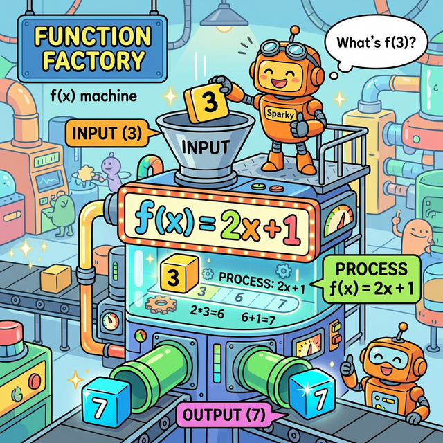
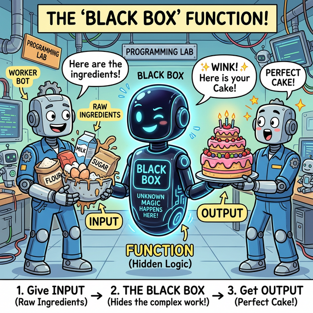

3.3.1 함수란 무엇인가?
학습목표
본 장에서는 코드를 단순히 나열하는 초보적인 단계에서 벗어나, 논리를 재사용 가능한 캡슐로 무장시키는 함수(Function)의 3대 필수 요소인 입력(Input), 처리(Process), 출력(Output)의 논리적 흐름을 깨우칩니다.
특히, 수학의 함수(Function) 개념이 어떻게 프로그래밍의 블랙박스(Black Box) 설계 철학으로 이어지는지 그 뿌리와 원형을 아주 상세하고 깊이 있게 탐구합니다.
1. 수학적 관점: 마법의 연산 기계 (The Math Machine)
프로그래밍의 ‘함수(Function)’라는 단어는 본래 수학에서 그대로 빌려온 용어입니다. 수학에서 함수 $f(x)$는 “어떤 상자(기계)에 값 $x$를 집어넣으면, 내부에서 정해진 규칙에 따라 연산(Process)을 거친 뒤, 전혀 다른 새로운 값 $y$를 뱉어내는 마법의 기계”를 의미합니다.

(웹툰 비유: 거대한 톱니바퀴가 돌아가는 ‘수학 함수 기계’입니다. 로봇이 기계 위쪽 깔때기에 숫자3 블록(Input)을 집어넣자, 기계 내부의 f(x) = 2x + 1 이라는 규칙(Process)을 거쳐, 아래쪽 파이프에서 숫자 7 블록(Output)이 툭 떨어집니다.)

(다이어그램: 수학적 관점에서의 함수 동작 원리입니다. 파란색 데이터 입자(Input)가 함수 기계 내부로 쏙 빨려 들어가 치열하게 가공된 후, 초록색의 전혀 새로운 데이터 입자(Output)로 변환되어 나가는 과정을 보여주는 수학적 데이터 흐름 애니메이션입니다.)프로그래밍의 함수도 이 수학적 원리와 100% 동일한 해부학적 구조를 가지고 있습니다.
- 입력 (Input / Parameter): 함수 기계 깔때기에 던져 넣는 원재료입니다. 파이썬에서는 괄호
()안에 던져주는 변수들을 의미합니다. - 처리 (Process / Body): 들어온 원재료를 지지고 볶고 연산하는 기계 내부의 동작입니다. 파이썬에서는 들여쓰기 된 코드 블록(로직)을 의미합니다.
- 출력 (Output / Return): 가공이 모두 끝난 뒤 기계 밑구멍으로 튀어나오는 최종 결과물입니다. 파이썬에서는
return키워드를 통해 뱉어내는 값입니다.
2. 공학적 관점: 치밀한 블랙박스 (The Black Box)
수학의 기계 원리를 소프트웨어 공학으로 가져오면, 함수는 곧 ‘블랙박스(Black Box)’가 됩니다. 비행기의 블랙박스처럼 내부가 꽁꽁 숨겨져 있다는 뜻이 아니라, “속에 무슨 복잡한 부품이 들었는지는 알 필요 없고, 겉에 달린 버튼(Input)과 튀어나오는 결과(Output)만 알면 누구나 쓸 수 있다”는 구현 은닉(Information Hiding)과 추상화(Abstraction)의 위대한 철학을 담고 있습니다.

(웹툰 비유: 평범한 로봇이 밀가루, 계란, 설탕 등 지저분한 날것의 재료(Input)를 정체를 알 수 없는 시커먼 ‘블랙박스 로봇’에게 전해줍니다. 블랙박스 로봇은 속에서 무슨 마법을 부렸는지 전혀 보여주지 않은 채, 1초 만에 완벽하게 구워진 3단 케이크(Output)를 내밀며 윙크합니다.)
(다이어그램: 호출자(Caller)는 함수 내부에 어떤 난해한 코드가, 몇 만 줄이나 들어있는지 일절 알지 못합니다. 그저 약속된 규격의 봉투(Input)를 우체통에 넣으면, 목적지에 약속된 소포(Output)가 도착한다는 사실만 믿고 사용합니다. 이것이 바로 거대한 소프트웨어를 레고 블록처럼 조립할 수 있게 해주는 기능적 격리(Isolation) 애니메이션입니다.)왜 함수를 블랙박스로 만들어야 할까요?
만약 여러분이 스마트폰의 전원 버튼을 누를 때마다 화면이 켜지는 ‘과정’—배터리에서 전압이 인가되고, 디스플레이 패널의 액정이 배열되며, 백라이트가 켜지는 수만 가지 전기적 신호—을 모두 당신의 머리로 직접 통제해야 한다면 어떨까요? 스마트폰을 쓰는 것 자체가 고통일 것입니다. 우리는 그저 “전원 버튼을 누른다(호출)” ➔ “화면이 켜진다(결과)” 라는 깔끔한 인터페이스만 누립니다.
코딩도 마찬가지입니다. 누군가가 미리 잘 짜둔 print(), len(), sum() 같은 훌륭한 내장 함수(블랙박스)들이 있기 때문에, 우리는 그 안에서 모니터 픽셀이 어떻게 그려지는지 신경 쓰지 않고 단어 하나로 모든 복잡성을 퉁칠 수 있는 것입니다.
3. 함수의 위대한 3대 존재 이유
그렇다면 우리는 왜 굳이 귀찮게 코드를 함수로 묶어서 만들어야 할까요? 코드를 위에서 아래로 그냥 쭈욱 길게 적어내려가면 안 될까요?
① 코드의 재사용성 (DRY 원칙: Don’t Repeat Yourself)
똑같은 행동을 하는 코드를 복사&붙여넣기로 여러 번 작성하는 것은 프로그래머에게 죄악(Spaghetti Code)입니다. 코드를 길게 복사해 두면 나중에 수정할 일이 생겼을 때 복사한 10군데를 일일이 다 찾아다니며 고쳐야 합니다. 하지만 그것을 함수라는 ‘명령어’ 하나로 묶어두면, 함수 내부의 코드 딱 한 줄만 고쳐도 그것을 호출하는 수천만 군데의 프로그램이 일제히 고쳐지는 마법을 경험하게 됩니다.
② 논리의 모듈화와 분할 정복 (Divide & Conquer)
RPG 게임을 만든다고 상상해 봅시다. ‘캐릭터 이동’, ‘몬스터 타격’, ‘아이템 습득’, ‘채팅창 렌더링’ 이 수백만 줄의 코드가 한 파일에 섞여 있다면 당장 내일 코드의 미아가 될 것입니다. 하지만 이 거대한 덩어리를 move_character(), attack(), get_item() 이라는 작은 함수(부품)들로 쪼개서 만들면(모듈화), 각 개발자는 자기가 맡은 톱니바퀴 하나에만 집중해서 고장 난 곳만 치밀하게 뜯어고칠 수 있습니다.
③ 가독성 (Readability)
함수는 그 자체로 프로그램의 ‘목차’가 됩니다. 내부 로직이 아무리 어려워도 함수 이름을 calculate_tax()라고 명명해 두면, 동료 개발자나 미래의 나 자신은 그 세부 코드를 읽기도 전에 “아하, 여기서 세금을 계산하고 다음 줄로 넘어가겠군!” 하고 전체 문맥을 소설책처럼 술술 읽어 내려갈 수 있습니다.
4. 함수 작동 흐름 (Mermaid)
함수를 정의해 두고, 메인 프로그램에서 “호출(Call)”하여 결과값을 돌려받기까지의 위임과 회수 과정을 아래 시퀀스 다이어그램으로 시각화했습니다.
sequenceDiagram
participant Caller as 메인 프로그램 (호출자)
participant Func as 사용자 정의 함수
Caller->>Func: 야! 함수야 일해라! (호출 및 Argument 전달)
activate Func
Note over Func: 자기만의 독립된 공간에서<br>치열하게 코드 블록 실행
Func-->>Caller: 옛다 결과물! (Return Value 반환)
deactivate Func
Note over Caller: 돌려받은 결과값을<br>변수에 담아 계속 활용
☕ Java vs 🐍 Python 스나이퍼 비교
1. 극단적으로 간결한 정의 방식 (def 키워드)
- Java: 자바에서 함수(메서드)를 하나 만들려면 험난한 관문을 거쳐야 합니다. 접근 제어자(
public), 정적 여부(static), 가장 중요한 반환 데이터 타입(int,String등)을 가장 먼저 선언해야 합니다.public static int add(int a, int b) { return a + b; }
- Python: 파이썬은 이 모든 선언의 압박을 단 세 글자
def(Define) 로 퉁칩니다. 파이썬은 동적 타입 언어이므로 들어오는 입력값도, 뱉어내는 반환값도 미리 귀띔해 줄 필요가 없습니다. 그저 실행해 볼 뿐입니다.def add(a, b): return a + b
2. 일급 객체 (First-Class Citizen)의 대우
- Java: 자바 8 이전까지 자바의 메서드는 오로지 ‘클래스’라는 거대한 성벽 안에 종속된 부속품일 뿐이었습니다. 함수 그 자체를 변수에 담거나 다른 함수에 던져줄 수 없었습니다.
- Python: 파이썬에서 함수는 변수나 숫자와 완벽히 동등한 지위(일급 객체)를 누립니다. 함수 덩어리 자체를 숫자
3이나 문자열"hello"처럼 변수에 틱 하고 대입할 수도 있고, 다른 함수의 인자로add함수 뭉치를 통째로 집어던질 수도 있는 극도의 유연성을 자랑합니다.
🎧 Vibe Coding
🗣️ 학생 프롬프트 (AI에게 이렇게 명령해 보세요): “파이썬에서 함수의 입력(매개변수)과 반환(return)의 개념이 잘 이해가 안 가. 숫자 2개를 입력하면 그 안에서 더하기, 빼기, 곱하기, 나누기를 한 결과값 4개를 동시에 한꺼번에 리턴하는 ‘만능 사칙연산 함수’ 코드를 작성해주고, 어떻게 함수가 여러 개의 값을 돌려줄 수 있는지 파이썬만의 특징(Tuple Unpacking)을 사용해서 아주 친절하게 주석을 달아줘.”
코딩 영단어 학습 📝
- Function: 기능, 작용, (수학의) 함수. (단어 자체에 이미 ‘어떤 목적을 달성하게 해주는 동작 메커니즘’이라는 뜻이 내포되어 있습니다.)
- Define (
def): 규정하다, 정의하다. (파이썬에서 새로운 함수를 창조하고, 그것의 룰을 세상(메모리)에 선포할 때 쓰는 키워드입니다.) - Argument (인자): 주장, 논거, (수학/컴퓨터의) 독립변수. (함수라는 판사에게 “이 재료를 바탕으로 판단해 주십시오” 하고 호출자가 집어 던져 넘기는 실제 데이터 값입니다.)
- Parameter (매개변수): 한도, 매개변수. (함수의 설계도 단에서, 나중에 Argument들이 날아오면 임시로 받아줄 그릇(변수 이름)들의 명칭입니다.)
- Return: 돌려주다, 돌아가다. (함수가 자신에게 주어진 모든 톱니바퀴 연산을 마치고, 최종 계산서를 자신을 부른 주인(호출자)에게 던져주고 무대에서 퇴장하는 명령어입니다.)
- Abstraction: 추상화. (세상 복잡한 블랙박스 내부 기어비는 다 숨겨버리고, 사용자가 쓰기 편한 엑셀 페달(껍데기)만 겉으로 딸랑 드러내 놓는 공학 최고의 미덕입니다.)